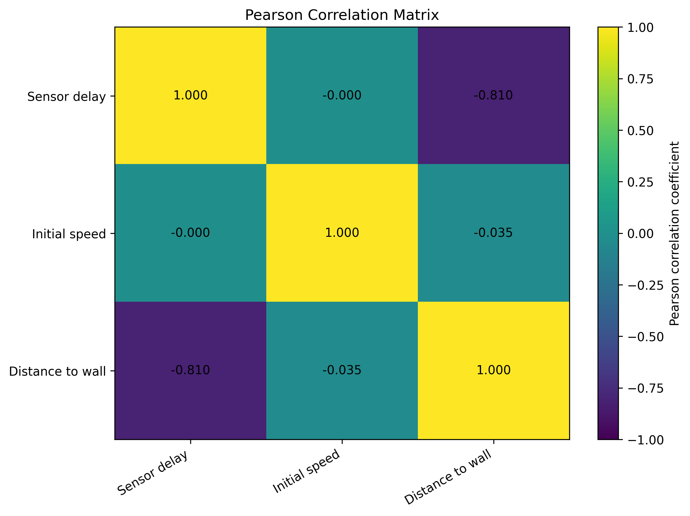
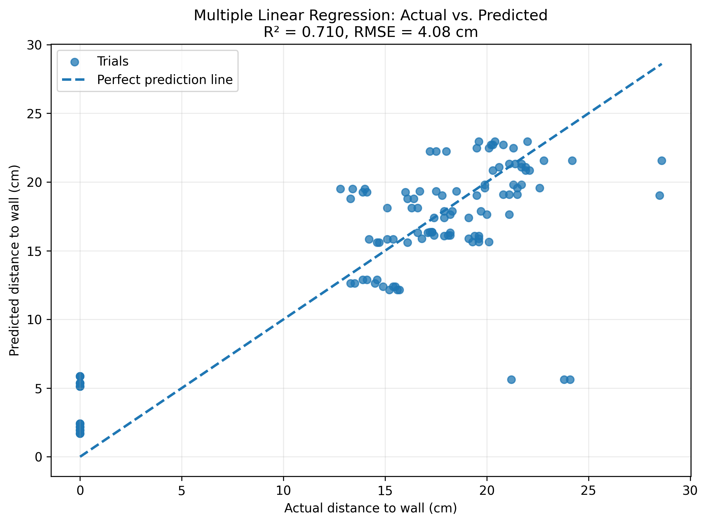

How Sensor Delay Affects Robot Stopping Distance
San Bernardino Science & Engineering Fair
Presenter: Tianrui Li
1. Abstract
- Purpose: Investigate how sensor delay, initial motor power, and floor surface affect stopping distance.
- Method: 120 trials testing 5 delay levels (10-500ms), 4 power levels, and 2 surfaces.
- Result: Sensor delay had a strong negative correlation (r = -0.81). System latency is the most critical factor for collision avoidance.
2. Introduction & Question
Background: Autonomous systems (like self-driving cars or warehouse robots) experience latency between sensing an obstacle and executing a full stop. This delay reduces the safety margin.
Research Question: How do sensor delay, initial motor power, and floor surface affect the final distance between a moving robot and a wall?
3. Hypotheses
- Sensor Delay: Increasing delay decreases the final distance from the wall (momentum carries it further).
- Motor Power: Higher power causes the robot to stop closer to the wall (harder to brake).
- Floor Surface: Different surfaces create different levels of kinetic friction, altering the braking distance.
4. Significance & Materials
This project mathematically models real-world collision avoidance systems.
- Lafvitech 2WD Mobile Robot
- HC-SR04 Ultrasonic Sensor
- Arduino (C++) for logic
- Python for Data Analysis

5. Experimental Design
Factorial Design: 120 trials across two unique surfaces to test varying friction levels.

Surface A: Wooden Floor

Surface B: Yoga Mat
6. Data Collection
- Safety Protocol: Clear area, low voltage power to prevent damage.
- Measurement: Final distance measured in cm from a fixed reference wall.
- Collision: A result of 0 cm indicates a complete failure to stop in time.

7. Interactive Dashboard
8. Full Dataset (120 Trials)
| Delay (ms) | Power | Surface | Distance (cm) |
|---|
9. Correlation Results
Pearson correlation analysis showed:
r = -0.810
This proves a strong negative correlation between sensor delay and stopping distance.

10. Regression Model
Multiple Linear Regression explained 71% of the variance (R² = 0.710).
Y = 20.095 - 0.035(Delay) - 0.960(Power) + 3.443(Surface)

11. Extreme Latency
At 500 ms delay, the robot consistently recorded 0 cm (Collision).
The system's processing latency was so severe that physical momentum forced a crash before the brake command could even be executed by the Arduino.

12. Conclusion & Future Work
- Conclusion: A fast sensor is useless if the system processing delay is too long. Yoga mats (high friction) significantly improved safety margins.
- Limitations: Zero-distance results grouped minor touches and hard crashes into the same value.
- Future Engineering: Implement adaptive braking algorithms that adjust force based on surface friction and active latency tracking.
Thank You!
I am open to any questions.